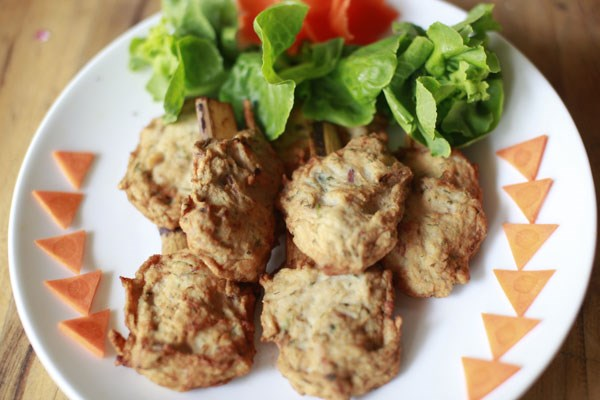

Chả chìa Hạ Lũng

- Khẩu phần 4
- Chuẩn bị 30 phút
- Thực hiện 20 phút
Nguyên liệu
- 300g thịt nạc dăm
- 1 con khô mực (100g)
- 5 tai nấm mèo
- 5 tai nấm hương
- 1/2 thìa súp tiêu hạt đập giập
- 1 thìa súp hành tím băm
- 1 thìa cà phê hạt nêm từ Thịt Thăn, Xương
Ống và Tủy - Bổ sung Vitamin A
- 1 thìa súp nước mắm ngon
- 1 cây mía
Hướng dẫn thực hiện
- Thịt nạc dăm rửa sạch, dùng khăn sạch thấm thật ráo, thái nhỏ, xay
nhuyễn
- Khô mực nướng sơ qua lửa, dùng kéo cắt mỏng
- Nấm mèo, nấm hương ngâm cho mềm, vẩy ráo, thái chỉ
- Cho thịt xay, mực, nấm mèo, nấm hương, hành tím, tiêu hạt, hạt nêm
vào cối. Nhúng chày vào nước mắm rồi quết đến khi hỗn hợp kết chặt lại và
giã thấy nặng tay là được
- Mía róc vỏ, rửa sạch, chẻ (gióng) thành từng que đều nhau. Bọc hỗn hợp
chả vào thanh mía, dùng tay bóp đều cho thon, chừa lại 1 phần đầu mía để cầm
- Cho chả vào xửng hấp chín. Trước khi dùng, mang chả chiên lại cho vàng.
Cho ra đĩa, dùng kèm với salad, chấm gia vị pha ớt xắt và lá chanh thái chỉ.
- Mách Nhỏ: Với món chả chìa này, sau khi hấp chín, để nguội, xếp vào hộp
cho vào tủ đông là có thể trữ được 1 tháng, đến khi dùng rã đông rồi chiên
vàng là được.